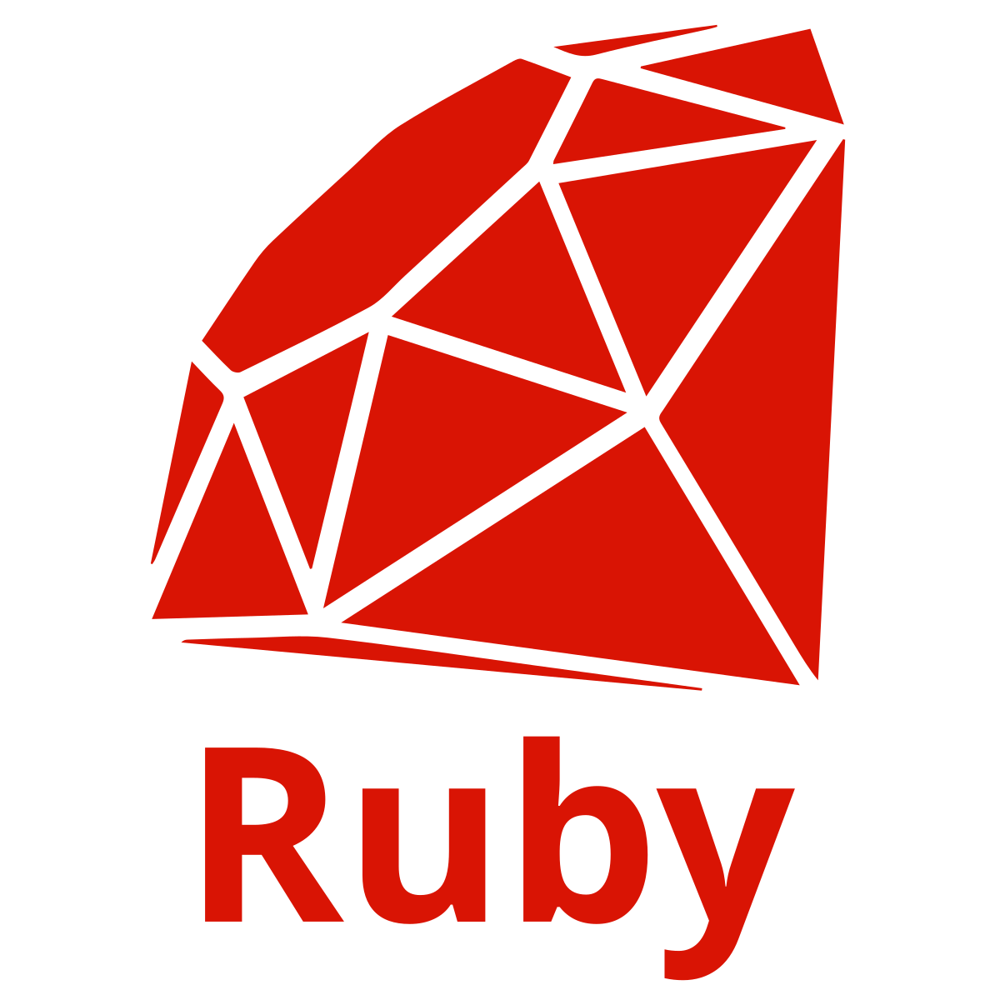

You want to learn some code but you don't know where to start?
Well you are in luck! Our programing language suggester can steer you in the right direction!
First let learn a little about the languages of programing:
- What is a Programing Language?
- A programming language is a notation designed to connect instructions to a machine or a computer. Programming languages are mainly used to control the performance of a machine or to express algorithms.
- What are the main types of Programing Languages?
- There are many types of coding languages. This is because the base language that computers speak—which is binary machine language, just ones and zeros—is far too difficult to use alone. We need some kind of in-between language that humans can use to give effective orders to computers in a reasonable amount of time.
Because all coding languages are just in-betweens, there are many types of languages that provide different levels of functionality. The first factor to consider when organizing these languages is high-level or low-level.
- High-Level Programming Languages
- High-level coding languages have a higher level of abstraction. This means they are closer to human language, and farther from machine code. High-level languages are easier to learn and use, but they usually offer less functionality and direct control over the computer.
High-level languages tend to be more automated, where a single programming command actually does many pre-programmed things to make programming easier and more efficient. - Low-Level Programming Languages
- Low-level coding languages have a lower level of abstraction, and as you might expect, are the opposite of high-level languages. They are closer to binary and farther from human language. Low-level languages are harder to learn and use, but offer more functionality and direct control over the computer.
While it may take more time and lines of code to do the same thing as a high-level language, low-level languages are far less restrictive and allow programmers to create far more detailed and efficient programs. - Front End Development
- Front End Developer works on the user side of applications. This means that you’ll be coding webpages, games, and any software or application that people can see. For example, a front end web developer most likely coded the webpage that you’re reading right now.
- The list of front end coding languages includes:
- HTML
- CSS
- JavaScript
- Back End Web Development
- Back End Developers manage the back end of applications or all of the things that take place behind the scenes. This is known as server-side programming. In order for this webpage to show up on your computer, as well as communicate with the servers that house all of a company’s data, a back end web developer had to construct and code that process.
- The list of front end coding languages includes:
- Python
- Java
- Ruby
Enter your info to started!
We Suggest:
JavaScript

JavaScript is all about functionality. JavaScript is one of the most popular languages in the coding universe right now. JavaScript is also a highly diverse language that can be used to code anything from video games to websites. It can also be used for both mobile and desktop apps. JavaScript was a required skill for over 470,000 jobs in tech last year. Potential jobs could include web development, front end development, or JavaScript engineering.
Python

Python is a general-use programming language meaning that it can be used for almost anything. Python is one of the most popular programming languages among big tech giants and startups. The language is perfect for beginners because it rejects complexity and is very simple to learn. Coders who know Python would be eligible for jobs in back end development, server coding, and more. Popular sites such as Google, Pinterest, Instagram, and Dropbox were all built using Python.
Ruby
Ruby is unique because it runs on the Ruby on Rails framework. The syntax of the language is very straightforward and easy to comprehend. Companies such as Twitter, Airbnb, Shopify, and thousands of other startups have built their platforms using Ruby. Ruby is continuously growing in popularity amongst educational outlets too, as many different coding educational platforms now specialize on both Ruby and Ruby on Rails framework.